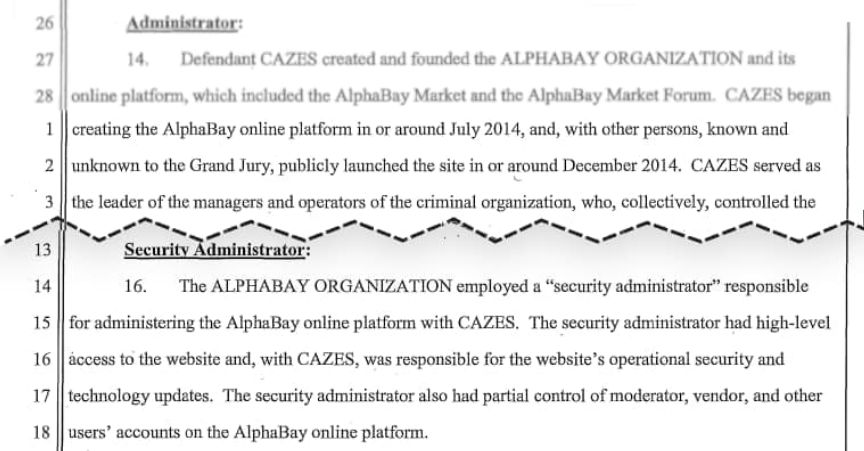
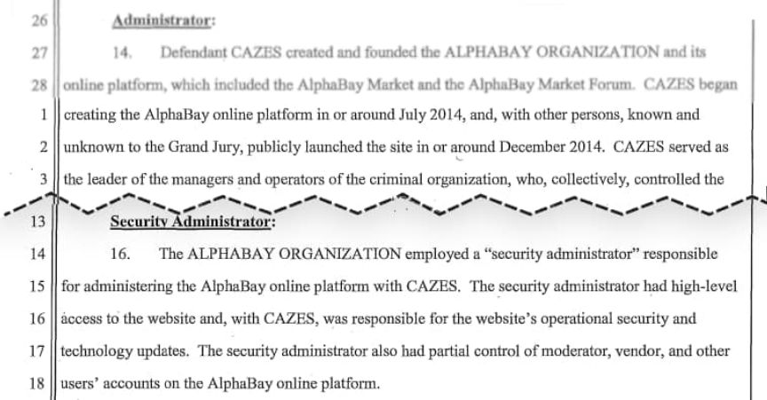

Darkowls Observations About Alphabay Are Ridiculous
~4 min read | Published on 2022-04-02, tagged Alphabay using 752 words.
DarkOwl, a company specializing in so-called “darknet intelligence,” believes there is “something larger transpiring” with the AlphaBay relaunch.
I do not want to make any claims about the legitimacy of DeSnake or AlphaBay. His return is one of the most surprising things I have witnessed unfold in this sector. The relaunch elicited mixed reactions from users on Dread, XSS, Twitter, and elsewhere for obvious reasons. Feedback appears to be a mix of legitimate concerns (there is no way to prove the original DeSnake did not sell his PGP key to someone else) and unverified or downright incorrect claims (the feds verified that Cazes controlled DeSnake’s account).

The cybersecurity company DarkOwl believes “something larger transpiring than a simple relaunch of the former marketplace.” However, the observations highlighted by the company’s analysts that supposedly support their theory are just silly.
The following points are from a DarkOwl blog post.
Registration for the market and the forum seem unnecessarily complicated, including errors if the pin code started with ‘0’ and asking for the user’s “real name.” The concept of a real name is irrelevant in the darknet unless the administration is possibly trying to catch someone not in the “right-state-of-mind” slip-up and actually put their real name into that field. The DDoS protection and bot detection measures are excessive for a brand new marketplace. While navigating the domain manually, DarkOwl analysts regularly had to reset their Tor circuit and refresh their identity to simply view the vendor listings. The market includes an outrageous number of strict rules delineated as “global AlphaBay” versus rules specifically for “buyers” and “vendors.” There are no weapons allowed (where the previous AlphaBay had a weapons category), no Fentanyl sales allowed (where the previous AlphaBay had a ‘Fent and RCs’ category), no COVID-19 vaccine or cures can be offered, no ransomware sold or advertised, and no Commonwealth of Independent States (CIS) related countries activities allowed. The “About-Us” and Frequently Asked Questions (FAQ) sections are a laborious read with over 13,000 words combined – 8,200 for the FAQ section alone. Conversely, the original AlphaBay’s FAQ was a mere 277 words. The overt exclusion of CIS countries is peculiar, especially given that [i]DeSnake[/em] and [i]alpha02[/em] were openly active in Russian carding communities. According to DarkOwl Vision’s archived documents, Russian speakers were present on the original AlphayBay forum and in interviews [i]alpha02[/em] spoke of how they “[i]work with our Russian colleagues to enable each of us to enrich our base of vendors and buyers[/em],” and clearly was not excluding users located in Russia. AlphaBay now only accepts the cryptocurrency Monero, and heavily promotes that users access it via I2P instead of Tor, calling their Tor services “mirrors” to the main I2P eepsite. [i]DeSnake’s[/em] detailed instructions for installing I2P on Dread fail to mention the potential risks of peer discovery and de-anonymization through known techniques like Eclipse and Sybil attacks in conjunction with flood-fill takeovers. Interestingly, the last known Monero-I2P-centric market was Liberitas, which went offline in June 2019 after a very short stint on the I2P network. DarkOwl could not confirm any prior darknet experience from the moderators [i]DeSnake[/em] has installed as Staff on the market and forum. The new AlphaBay Marketplace refuses donations. It is unheard of that a darknet service would decline and discourage donations. A fully-functional darknet marketplace will indeed provide sufficient financial resources in the future; yet refusing them from the start is unreal.
DarkOwl has been active in this scene for a long time. They have some legitimately informative analysis on marketplaces. Surely their analysts know that these observations about AlphaBay are not any more convincing than random statements on Dread.
To their credit, they did not publish outright lies. Although I am not sure it “is unheard of” that a market would not solicit donations. DarkOwl’s statements in the rest of the blog post seem to imply that DeSnake is now much wordier than he used to be (although the word count bullet point in the list above only suggests that DeSnake did not write the original FAQ which is not relevent). I cannot really disagree with this and it might be a legitimate point in support of a theory of some sort.
As to th i2p point, this person on Dread who claims to be a former LEO wrote that LE markets will encourage use of i2p.<br><code>dreadytofatroptsdj6io7l3xptbet6onoyno2yv7jicoxknyazubrad.onion/post/486ac94a84cdac803ed4</code>
darkowl.com / archive.is
bonus from 2017 with some of the same characters: Admins and staff of the largest darknet drug marketplace - Alphabay - have been doxxed on reddit even after paying an extortion amount of $45,000 (archive.org)
I do not want to make any claims about the legitimacy of DeSnake or AlphaBay. His return is one of the most surprising things I have witnessed unfold in this sector. The relaunch elicited mixed reactions from users on Dread, XSS, Twitter, and elsewhere for obvious reasons. Feedback appears to be a mix of legitimate concerns (there is no way to prove the original DeSnake did not sell his PGP key to someone else) and unverified or downright incorrect claims (the feds verified that Cazes controlled DeSnake’s account).

Even in the indictment, feds separated DeSnake and alpha02.
The cybersecurity company DarkOwl believes “something larger transpiring than a simple relaunch of the former marketplace.” However, the observations highlighted by the company’s analysts that supposedly support their theory are just silly.
The following points are from a DarkOwl blog post.
DarkOwl has been active in this scene for a long time. They have some legitimately informative analysis on marketplaces. Surely their analysts know that these observations about AlphaBay are not any more convincing than random statements on Dread.
To their credit, they did not publish outright lies. Although I am not sure it “is unheard of” that a market would not solicit donations. DarkOwl’s statements in the rest of the blog post seem to imply that DeSnake is now much wordier than he used to be (although the word count bullet point in the list above only suggests that DeSnake did not write the original FAQ which is not relevent). I cannot really disagree with this and it might be a legitimate point in support of a theory of some sort.
As to th i2p point, this person on Dread who claims to be a former LEO wrote that LE markets will encourage use of i2p.<br><code>dreadytofatroptsdj6io7l3xptbet6onoyno2yv7jicoxknyazubrad.onion/post/486ac94a84cdac803ed4</code>
darkowl.com / archive.is
bonus from 2017 with some of the same characters: Admins and staff of the largest darknet drug marketplace - Alphabay - have been doxxed on reddit even after paying an extortion amount of $45,000 (archive.org)